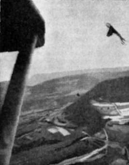
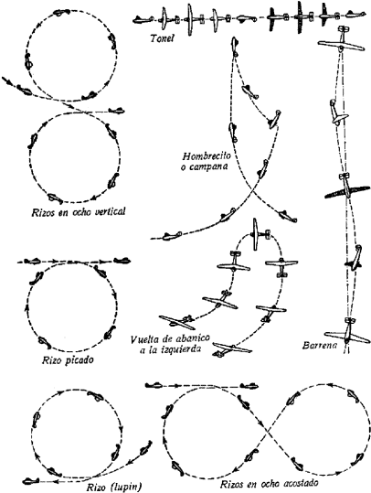

Manual del Vuelo a Vela
Wolf Hirth
1942
Vuelo sin motor, acrobático
por
OTTO BRAEUTIGAM
El objeto y
finalidad del vuelo acrobático sin motor es dar confianza al piloto en sí mismo y en su
aparato. El vuelo acrobático debe dar al piloto la seguridad de que se encuentra en
terreno conocido aun en situaciones de vuelo anormales y de que, sin peligro, puede
sacar de ellas al aparato y llevarle otra vez a la situación normal. En la enseñanza de
vuelo acrobático verá el piloto todo lo que puede hacerse con un velero sin que traiga
necesariamente como consecuencia su «caída desordenada».
Como
quiera que en los vuelos de concurso y en el vuelo sin visibilidad un piloto puede
encontrarse fácilmente en situaciones peligrosas, el dominar el vuelo acrobático le
dará la posibilidad de ser también dueño de la situación en tales circunstancias.
Considerando
ya en sí mismo el vuelo de acrobacia sin motor, cabe distinguir entre « acrobacia
elemental », que es la que debe saber todo piloto para encontrarse seguro en el vuelo y
poder hacer frente a una situación peligrosa, y la « acrobacia especial o acrobacia
superior », la cual es ya una cuestión voluntaria para el piloto.
¿ Qué
se necesita para enseñar el vuelo acrobático ? Un velero apropiado con indicador de
velocidad y altímetro; la mayor práctica posible de vuelo, es decir, que se domine el
vuelo normal y la virada sin ayuda de punto alguno de referencia ni ver el horizonte; un
profesor de vuelo que se haga cargo de las faltas, que desde luego se cometerán, y que
esté encargado de dar las órdenes de vuelo y de hacer su crítica; un buen cinturón y
un buen modo de estar sujeto al aparato y un paracaídas que, si es automático, tenga
seguro funcionamiento. Pero lo más importante es un piloto con dominio y disciplina
sobre si mismo, que cumpla exactamente hasta en los menores detalles las órdenes que
reciba, que no empiece a perder la cabeza en el aire porque esté su novia en el
aeródromo y que no le guíe la ambición, aunque se crea capaz de tenerla.
Antes de
empezar las lecciones habrá que distribuir exactamente las cargas en el avión, pues la
primera condición para el vuelo de acrobacia es que el aparato lleve la carga tal como
la deba llevar y no de otra manera. Luego se limpiará bien el fuselaje, quitando la
suciedad y virutas que pudiese tener, así como los pernos o herramientas que hubiese
dentro. Se deberá comprobar que el asiento del piloto está bien sujeto y que todos los
cables de mando llevan la tensión debida, teniendo en cuenta que como los tensores de los
cables de los timones de altura y dirección son fácilmente accesibles, se los conserva
generalmente en buenas condiciones de tensión, pero no así los del mando transversal
que, con frecuencia, se tiene abandonados, pues siendo los agujeros de los tensores
bastante pequeños ocurre que el pasador para hacerlos girar es fino y se rompe
fácilmente, lo cual es causa de que muchas veces se rehúse hacer la operación, o bien
porque para llegar hasta los tensores hay que desmontar las alas. Pero ahora no se puede
retroceder ante estos inconvenientes. Con cables flojos no se pueden hacer acrobacias,
pues en éstas las presiones del aire sobre los timones son notablemente mayores que en
los casos normales y los cables no tensados convenientemente hacen « flojos » e
ineficaces los mandos o bien puede salirse un cable de una polea de guía y entonces se
queda bloqueado el timón correspondiente.
Como para
hacer vuelo acrobático se necesita mucha altura, sólo puede emplearse en la enseñanza
el envuelo por remolque de avión. Si se emplea un tren de partida arrojable, el piloto
del avión deberá cerciorarse de que el tren ha sido efectivamente arrojado después del
rodaje, pues si se quedase enganchado podría desprenderse en la acrobacia y averiar
el velero. Por lo tanto, si ve que el piloto del velero no ha arrojado aún el tren a 100
m. de altura, deberá hacer la señal de desembragar, pues arrojar el tren desde mayor
altura puede ser peligroso.
Antes de
partir hay que atarse bien con el atalaje, pues no debe darse el caso de salirse de él, y
hecho esto y no olvidándose de poner debidamente el paracaídas, puede ya empezar la
lección. La altura a la que hay que llegar en remolque es, en general, la de 1000 m.,
pues por debajo de 500 no debe hacerse acrobacia alguna.
La
primera acrobacia que debe enseñarse es la barrena a derechas y a izquierdas. Después de
desembragar se deberá, desde luego, seguir en vuelo recto, sentado de modo natural, sin
rigidez; no coger la palanca con la mano, empuñándola, sino suavemente, dejándola
correr; las piernas apoyadas ligeramente en el mando de dirección, pero sin hacer fuerza
sobre los pedales. Entonces, tirando lentamente de la palanca se va reduciendo
progresivamente la velocidad manteniendo bien el equilibrio transversal y la ruta con
los mandos respectivos. El velero se irá encabritando cada vez más hasta que, por fin, o
irá de cabeza o empezará a resbalar de ala para, con ello, tomar más velocidad. En todo
este proceso podrá ver el alumno que pasa bastante tiempo hasta que un aparato
encabritado, con la posición crítica, trata de ayudarse por sí mismo tomando velocidad.
Si se desea que el aparato haga la barrena a la izquierda, deberá el piloto, después de
encabritar y antes de que el avión bascule por sí mismo, mandar todo a la izquierda
lentamente con el timón de dirección y llevar la palanca completamente contra su cuerpo.
En algunos veleros hay que mandar también con los alerones hacia la dirección en que se
quiere hacer la barrena; en otros, al contrario, en la dirección opuesta. El aparato
entonces cae de cabeza sobre el ala izquierda y toma el movimiento de rotación hacia este
lado. El avión hace barrena a la izquierda.
El piloto
deberá habituarse a este estado de vuelo, tratando de hacerse bien cargo de que el
aparato gira y observará el terreno para recibir la completa sensación de que el
avión desciende girando. Al principio, lo que parece es que ocurre lo contrario: que es
el terreno el que da vueltas. Para salir de la barrena no hay más que llevar los mandos
al centro, en su posición normal y picar empujando la palanca. Entonces cesa la rotación
y el aparato sigue con vuelo en picado, del que se sale recuperando despacio y con
cuidado.
Barrena a
la derecha: encabritar poco a poco; todo el timón de dirección suavemente a la derecha;
palanca al cuerpo. El avión cae sobre el ala derecha y empieza la barrena en este sentido. Salir de la barrena;
alerones y timón de
Al hacer
el primer ensayo de barrena ocurre a veces que el avión, después de encabritar, bascula
sobre el ala y hasta da una media vuelta, y entonces es cuando empieza a tomar velocidad,
pareciendo como si no quisiese entrar en barrena. Ello puede ser debido a que el piloto ha
tirado de la palanca demasiado aprisa, por lo que en el siguiente ensayo encabritará
mucho más despacio, pero encabritará más; y tirará más y más de la palanca, hasta
que con todo el mando transversal, apenas pueda mantenerse el avión y entonces
mandará con el timón de dirección (Nótese que en la primera explicación se mandaba
la barrena encabritando y metiendo un pie a fondo; la explicación que ahora se
da es: encabritar, meter a fondo el mando transversal y luego el de dirección. Se
advertirá que antes de entrar en acción este último mando y conseguida con el
transversal la inclinación deseada, se deberá llevar este al centro. - N. del T.).
Si todavía no quiere el aparato entrar en barrena, se deberá poner atención en ver si
es que efectivamente se han llevado los mandos a fondo y si al bascular el aparato o al
bajar la proa se ha olvidado maniobrar debidamente los mandos, porque todos estos
descuidos los aprovecha el avión para no obedecer a nuestra voluntad. Puede ocurrir que
se ponga todo ese cuidado y que el aparato no entre en barrena o si entra salga en seguida
de ella. Si pasa esto, es decir, si el avión se niega a hacer la barrena, se aterrizará
y se hará la verificación de la distribución de cargas, pues probablemente es que el
aparato está demasiado cargado de proa. Entonces se mirará también si todo consiste en
que se han tensado demasiado los mandos de los alerones. Reparado todo, se vuelve otra vez
al aire para reanudar los ensayos.
Sin duda
hay veleros que no pueden hacer la barrena y esto no es una mala cualidad, puesto que así
la barrena es un estado de vuelo que, si se presenta, el piloto no tiene que hacer nada
por sí, puesto que de todo se encarga el propio aparato. Sin embargo, es importante que
un piloto sepa lo que es una barrena y cómo se sale de ella.
Para
practicar la virada sobre el ala se va escorando poco a poco el avión, haciendo
viradas sucesivas con aumento de su inclinación transversal, pero al terminar se lleva la
palanca a la posición central. Para salir de esta situación de vuelo se va aflojando el
timón de altura y a veces hay que empujar la palanca y se va dando apoyo al avión con
los mandos transversal y de dirección. Al mandar esta maniobra no debe andarse con
melindres en el mando transversal, sino que se dará de una vez el mando necesario.
Puede
ocurrir alguna vez que el avión no enderece con el mando transversal, y entonces se hará
entrar al aparato en virada mandando con el timón de dirección y picando, con lo que el
avión tomará el vuelo en planeo muy pendiente o en picado, del cual luego se
recuperará, como se ha dicho al tratar de la barrena.
Otra
figura de acrobacia que se puede hacer a altura menor que la barrena es la vuelta de
abanico o virada ceñida ganando altura que, como esta denominación indica, es volver
los 180º. Esta vuelta es la acrobacia más difícil dentro del género elemental, pero en
cambio es la más bonita, tanto para el piloto como para el espectador. Para hacerla se
necesita tener mucha velocidad. Se empieza por un vuelo recto picando, que para dar una
medida se dirá que debe llegar a doble velocidad de la normal, y entonces se encabritará
suavemente hasta que suba casi en la vertical y, conseguida esta situación, se pondrá el
timón de altura en posición normal hasta quedar casi parado; entonces, con el último
resto de velocidad que queda se vuelve el avión sobre el ala 180º mandando con los
alerones y el timón de dirección. Este punto culminante es el momento más difícil de
la acrobacia. Tomar el tiempo para que resulte la vuelta en el momento oportuno, hay que
hacerlo correctamente guiándose por el sentimiento. Si se hace la vuelta cuando todavía
se tiene mucha velocidad, la figura resulta poco vistosa porque el avión debe volver en
el mismo punto en que se inicia la virada y casi parado. Si, por el contrario, se espera
demasiado, el avión no tiene velocidad para obedecer al mando y resbala de cola o de ala.
En la
virada sobre el ala, el ala exterior recorre un camino mayor que la interior, de modo que
si la vuelta es a la izquierda, por ejemplo, sería el ala exterior la derecha y la que
recorrería el mayor camino; por lo tanto, esta ala recibiría una sustentación mucho
mayor, con lo que la acción que se ejerce sobre el avión es la de volcarle para quedar
invertido; a esta acción deberá oponerse el piloto maniobrando el mando transversal.
Al dar la vuelta a la izquierda como se supone, se iniciará la rotación sobre el ala de
este lado poco antes de llegar al punto de detención, metiendo todo el timón de
dirección y el mando transversal a la izquierda y en cuanto el aparato entra ya en
virada se volverá al centro el mando transversal y se compensará, si es preciso
empleando contramando, el exceso de sustentación del ala exterior. Cuando se ha terminado
la vuelta de 180º
se
llevan todos los mandos a la posición normal y entonces estará el aparato en situación
de vuelo en picado ganando velocidad, de la cual situación se saldrá recuperando como ya
se sabe. Una vuelta de abanico bien hecha deberá terminar volando el avión exactamente
en la dirección contraria a la que llevaba al empezar la figura y con igual velocidad,
por lo tanto, no se deberá recuperar en seguida, sino que se dejará el aparato volar un
tanto en picado para que tome la velocidad correspondiente.

Fig. 150. La figura más sencilla de vuelo
acrobático es el rizo (lupin) saliendo hacia arriba desde el vuelo recto normal
Se facilita
mucho el aprendizaje tomando una referencia en el suelo, para lo cual se escogerá una
carretera o un ferrocarril, una linde de un bosque o de una finca, lo que se ve muy bien
desde gran altura. Así, se empieza el vuelo en picado a lo largo de la referencia
escogida y se la puede seguir muy bien durante la ejecución de la acrobacia sabiendo el
rumbo con el que debe hacerse el vuelo contrario.
También
puede usarse una referencia de las citadas en la ejecución del rizo o lupin. El
rizo hacia arriba, respecto al vuelo recto, es la acrobacia más sencilla de la clase
elemental y casi siempre sale bien en el primer ensayo.
Se va
volando recto y se empieza picando hasta que la velocidad sea un 60 ó 70 % mayor que la
normal. Se ha dicho picando, pero hay que añadir, no bruscamente, sino que la velocidad
debe ir creciendo de manera progresiva, teniendo cuidado de que el rumbo se conserve el
mismo y de que el avión no se incline a un lado ni a otro. Una vez conseguida la
velocidad necesaria se tira suavemente y despacio del mando de altura, y entonces se
sentirá gran presión en la palanca y asimismo contra el asiento. Exactamente en la
proporción que se vaya sintiendo que disminuyen la presión en el mando y la velocidad,
se deberá ir tirando de la palanca de modo que al llegar el aparato a la posición
invertida esté la palanca al pecho y la velocidad sea entonces la mínima; pero no se
puede dar una indicación sobre las proporciones en las que se distribuirá la maniobra,
que deberá hacerse por sentimiento. El aparato sigue más allá de la posición
invertida, conservándose la palanca al pecho y el horizonte irá volviendo, poco a poco,
otra vez hacia arriba. El avión seguirá algo con vuelo en picado dejándose un momento
suelto el mando de altura, con lo que se recobrará velocidad, y entonces se irá
recuperando suavemente hasta llegar al vuelo normal y el lupin ha terminado.

Fig. 151. La figuras mas importantes de vuelo acrobáticoLo más
difícil del lupin es saber tirar acertadamente de la palanca, al hacer lo cual se deberá
tener en cuenta que se debe dejar tiempo al avión para que obedezca al mando, pudiendo
servir de guía, para graduar la maniobra, la presión que se sienta contra el asiento.
Esta presión es la mayor al iniciar la acrobacia, de modo que la disminución de la
presión es una medida para conocer la intensidad de mando que se deberá ir haciendo. Si
la velocidad con que se hace un lupin
es
la suficiente y el mando ha estado bien hecho, en posición
invertida se seguirá sintiendo una
ligera presión contra el asiento.
Aun
cuando el rizo es fácil, no por eso puede dejarse de cometer algunas faltas. Si se ha
empezado con poca velocidad o si se ha tirado de la palanca demasiado despacio,
ocurrirá que se tiene como un punto muerto en la posición invertida, en la que se
sentirá uno colgar del cinturón y en la que el avión se quedará sin velocidad.
Entonces se deberá mantener férreamente la palanca al pecho, el avión caerá algunos
metros apoyándose en el dorso, recobrará velocidad y se terminará normalmente el resto
de la figura.
Si
después del picado se tira demasiado bruscamente de la palanca, el rizo resultará de un
diámetro pequeño y la presión sobre el asiento será desagradable por lo excesiva. Este
lupin
tan duro somete
al aparato a grandes esfuerzos, resulta feo de aspecto y es desagradable para el piloto.
Si, en
cambio, se ha llegado a la verdadera medida de la velocidad del mando de un lupin, éste
se ejecuta impecablemente. En esta figura ayuda también una carretera o un ferrocarril.
Se pica a lo largo de los carriles - se tira dulcemente de la palanca - desaparece el
horizonte - se está invertido - el horizonte sube hacia « arriba » otra vez, y entonces
se busca nuevamente la línea de los carriles y se puede hacer la corrección necesaria
del rumbo por medio de los mandos, de modo que el avión termine la acrobacia a lo largo
del ferrocarril.
Pero el
rizo también puede fracasar completamente. Si se hace que el avión tome el lupin con
velocidad demasiado escasa o se tira de la palanca demasiado despacio, ocurre que no llega
hasta la posición invertida, sino que queda sin velocidad en posición, por ejemplo,
vertical y como colgado, y entonces el aparato o resbala de cola o lateralmente, de ala,
ocurriendo esto último si no ha subido recto sino algo inclinado, resultando entonces que
la acrobacia que se intentó hacer como lupin, es una vuelta de abanico fracasada.
Si se
hizo subir recto el aparato, se inicia el resbalamiento de cola, y en tal caso el piloto
deberá mantener la palanca al pecho y esperar. El aparato, después de resbalar de cola,
se abatirá con bastante violencia hacia adelante pasándose de la posición de vuelo en
picado, levantando la cola y luego se sacará del descenso a pico, recuperando según se
ha explicado anteriormente. Esta figura, cuando se hace voluntariamente, se llama «
el hombrecito » o «campana», en la cual es peligroso abandonar la palanca mientras el
avión resbala de cola, pues el timón de altura se abate violentamente por la falsa
dirección en que sopla ahora el viento relativo y puede resultar estropeado. El
hombrecito es una figura de mucho lucimiento ante los espectadores, pero no es la más
agradable para el piloto.
Si se
quiere hacer el hombrecito, hay que empezar como una vuelta de abanico: después de picar
se encabrita suavemente el avión - poniendo cuidado en mantener la dirección y sin
inclinarse transversalmente - y se sube en candelero hasta llegar a quedar detenido;
durante la subida se mantendrá el timón de altura en posición normal. Una vez que se ha
llegado al punto muerto, se lleva la palanca al pecho y se mantiene firme en esta
posición ; entonces resbala el avión de cola y por la acción del timón de altura
bascula hacia adelante más allá de la posición normal, dejándose entonces suelto ese
mando. Este basculamiento es un movimiento, sin mando, muy duro que lleva al avión hasta
un principio de inversión; emprende luego el vuelo en picado del cual se sale recuperando
hasta la posición de vuelo normal.
Hay otro
modo de hacer el hombrecito: picar - tirar mucho de la palanca -, vuelo en candelero hasta
el punto muerto. Entonces en lugar de llevar la palanca al pecho se empuja a fondo y se
mantiene firme. El avión resbala de cola y bascula emprendiendo luego el vuelo en picado.
También
pertenece al género acrobático una maniobra para aterrizar en un lugar fijado. Es el resbalamiento
de ala, que para esos casos constituye un medio indispensable. El resbalamiento de ala
tiene por objeto empeorar las condiciones de planeo del aparato. El primer ensayo de
esta figura se deberá hacer a gran altura, y se manda metiendo el pie derecho, por
ejemplo, completamente a fondo; entonces el aparato tiende a virar a la derecha, pero se
le impide ese giro mandando los alerones a la izquierda, y, no pudiendo virar, el aparato
empieza a resbalar.
Lo más
importante al resbalar es mantener la dirección. Si el avión mandado con el timón de
dirección a la derecha, tiende a salirse de su ruta hacia ese lado, es que tiene poco
escoramiento a la izquierda; si se va hacia la izquierda, entonces hay que disminuir un
poco la inclinación. Naturalmente que para resbalar a la izquierda hay que hacer
análogas maniobras. Se evitará el aumento de velocidad durante el resbalamiento, tirando
suavemente de la palanca, Por lo tanto, como se ve, al iniciar la acrobacia hay que mandar
con todos los timones simultáneamente. Se mete un pie para el mando de dirección; el
mando transversal se maniobra en contramando y se tira un poco de la palanca. Para salir
del resbalamiento se centran todos los mandos, no olvidando que se había tirado un poco
de la palanca. El avión no sale en seguida del resbalamiento, sino que sigue resbalando
algunos segundos después de centrar los mandos. La enseñanza del resbalamiento debe
empezar a gran altura, porque, para emplear esta acrobacia como medio de aterrizaje, hay
que saber hacerla correctamente y mantener en ella la dirección con toda exactitud.
Si, por
ejemplo, hay que hacer un aterrizaje de circunstancias en un campo de reducidas
dimensiones y existe un vallado o seto que hay que pasar antes de llegar á él, se podrá
hacer el acercamiento al campo conservando la «altura de seguridad» y poco antes del
vallado perder altura resbalando de ala. Si en el resbalamiento se sale el aparato del
rumbo, habrá que describir un « gancho » para recobrar la dirección primitiva.
También puede ocurrir que sea necesario rodear el vallado antes de llegar al campo de
aterrizaje.
Los
estados de vuelo y figuras que hasta ahora se han explicado, es decir: barrena, vuelta de
abanico, lupin, campana, virada sobre el ala y resbalamiento son los que constituyen
la llamada acrobacia elemental. El poder dominar estas situaciones de vuelo le da al
piloto gran cantidad de confianza y de seguridad, y seguramente, en la mayor parte de los
casos, podrá ayudarse con ellas a salir de los «momentos comprometidos». Y es claro que
no se pasará a la acrobacia superior si no se tiene seguridad y práctica completas en la
acrobacia elemental.
La
acrobacia superior es jugar en el aire; suave y elegantemente se van uniendo unas
figuras a otras y todas son ejecutadas a la perfección, dando al espectador la sensación
de que allá arriba el piloto se está regocijando en dominar su aparato sin reserva
alguna. Naturalmente, que todas las acrobacias descritas se emplean también en la
acrobacia superior, solamente que han de ejecutarse con absoluta perfección y limpieza;
pero además aparecen en esta acrobacia otras nuevas figuras aun más difíciles: el vuelo
invertido, la barrena invertida, el tonel y el rizo picado.
El tonel,
en vuelo sin motor, cuando se hace correctamente, es la figura más difícil. Se
entiende por correcto un tonel cuando se ejecuta de modo que el eje del tonel esté en la
dirección en que se volaba, y que no haya oscilaciones sensibles en la altura. El tonel
es una rotación del avión de 360º alrededor de su eje longitudinal y, por lo tanto, el
aparato pasa de la posición normal a la de vuelo de cuchillo y luego a la invertida
para seguir girando y, pasando por la posición de vuelo de cuchillo, volver a la normal.
El vuelo
de cuchillo es una situación de vuelo en la que el avión tiene un escoramiento de 90º
o sea que las
alas son perpendiculares al horizonte. El vuelo de cuchillo prolongado sólo puede
hacerse con un avión de motor potente, puesto que en ese estado de vuelo sólo actúan
como superficies sustentadoras las caras laterales del fuselaje. Con vuelo sin motor
sólo pueden hacerse vuelos de cuchillo de algunos segundos de duración porque en seguida
el aparato resbala de ala; en el tonel las fases en que las alas están verticales son
vuelos de cuchillo.
Lo más
difícil en el tonel es el paso al vuelo invertido. En esta situación el perfil y ángulo
de posición de las alas corresponden a otra posición del eje longitudinal.
El valor
positivo de ese angulo, que es el formado por el ala con el eje del fuselaje, se hace muy
sensible en el vuelo invertido y da lugar a un esquema de vuelo muy diferente al del
normal; como la cara dorsal del ala tiene mayor curvatura que la inferior y debe formar
un ángulo determinado con el citado eje del fuselaje, resulta que la cola debe quedar,
en vuelo invertido, más baja que en el normal y de aquí que al espectador dé este vuelo
la sensación de que el avión va excesivamente encabritado.
Por
consiguiente, si en el vuelo invertido se ha de seguir tomando el horizonte como
referencia, la punta de proa deberá quedar por encima del horizonte. Como ahora en este
vuelo está invertido el efecto del timón de altura, el piloto conseguirá la posición
que se ha dicho empujando bien la palanca. Además, por las especiales condiciones
aerodinámicas en que se halla ahora el avión, la velocidad de vuelo necesaria en la
posición invertida es mayor que en la normal. Por otra parte, como la posición normal de
la palanca en el vuelo invertido es empujando, la dificultad consiste en encontrar la
posición debida para la palanca, mientras se pasa de la posición normal a la invertida,
para que, al llegar a ésta, no resulte excesivo el mando que se ha dado.
Es mejor
empezar la enseñanza por el tonel a la derecha, porque a la izquierda es de más difícil
ejecución, ya que al dar el mando transversal hay que llevar el brazo derecho
completamente a la izquierda. El tonel se empieza picando ligeramente y una vez conseguida
la mayor velocidad se lleva nuevamente la proa hasta el horizonte. Entonces, un mando
continuo de los alerones hacia la derecha, que se mantendrá en toda la figura, dará
lugar a la rotación, y como, al aumentar el escoramiento el aparato tenderá a resbalar
sobre el ala derecha, hay que oponerse a este afecto con el mando del timón de dirección
a la izquierda, con lo cual éste obra como timón de altura. Este mando sobre la
dirección debe empezar al iniciarse la rotación y llegar al máximo en la posición del
vuelo de cuchillo, y cuando el aparato sigue su rotación hacia la posición invertida, se
va restituyendo el timón de dirección a su posición normal, y la tendrá, es decir,
estará centrado, al alcanzar esa posición invertida.
Cuando el
aparato va pasando de la posición normal a la invertida, por la intermedia del vuelo de
cuchillo, después de ésta se inicia ya la inversión del efecto del timón de altura,
que será completamente opuesto al normal en esa posición invertida, y como la proa del
avión debe permanecer dirigida al horizonte, se deberá empujar la palanca, conservando
metido todo el mando transversal, hasta llegar a la posición invertida. Este mando,
empujando la palanca, deberá hacerse en el mismo tiempo que el aparato emplea para
pasar desde el vuelo de cuchillo hasta el vuelo invertido. Cuando ahora el avión sigue
girando desde esta posición, siguiendo siempre con todo el mando transversal a la
derecha, se irá tirando despacio de la palanca para que ocupe la posición normal al
llegar otra vez al vuelo de cuchillo. En la última fase, desde esta posición a la
normal, se irá volviendo al centro el mando transversal, de modo que al ser alcanzada esa
posición normal los mandos estén en su centro, y así se ha terminado el tonel.
El timón
de dirección tiene también otro papel en la segunda mitad de la figura. Cuando,
suponiendo siempre el tonel a la derecha, el aparato pasa de la posición invertida a la
de vuelo en cuchillo, tiende otra vez a resbalar de ala, lo cual se impide obrando sobre
el timón de dirección, pero ahora hacia la derecha: el mando deberá empezar al salir de
la posición invertida para llegar al máximo con las alas verticales y volver, poco a
poco, al centro, al seguir girando el avión. Al llegar, pues, a la posición normal, este
mando de dirección, como los otros, ha vuelto a estar centrado.
Una
acrobacia como el tonel no puede ejecutarse al principio sólo con el sentimiento: exige
madura reflexión. Antes de ir al avión hay que sentarse en un rincón solitario y
representarse en la imaginación todo el proceso del vuelo.
Hay que
imaginarse el avión volando recto hacia un punto del horizonte ; cómo al mandar a fondo
los alerones el avión va escorando más y más; cómo se le sostiene con el timón de
dirección a la izquierda; cuando ha llegado al vuelo de cuchillo y las alas están
verticales, hay que empezar a empujar poco a poco la palanca para que la punta de proa
esté algo más alta que el horizonte al llegar a la posición invertida. Ya pasa el
avión de esta posición, entonces se le impide resbalar de ala mandando a la derecha el
timón de dirección; el timón de altura vuelve a su posición normal:
El tonel
es la figura más difícil y sería muy conveniente tener práctica en el vuelo invertido
antes de aprender el tonel; pero, para llegar al vuelo invertido, hay que hacer el tonel.
En esta
acrobacia se puede cometer dos faltas fundamentales. En los dos casos se trata de un falso
efecto del timón de altura al invertirse su modo de actuar. Cuando al pasar el aparato
desde la posición normal a la de vuelo en cuchillo y luego a la invertida y se omite
empujar la palanca para tenerla como en picado en el vuelo invertido, el aparato llega a
esta posición caído de proa y por ello toma en seguida más velocidad. En este caso, de
ningún modo se tratará de recuperar tirando de la palanca, pues al hacer esto sólo se
conseguiría llegar a velocidades que podrían ser peligrosas. Por lo tanto, si al pasar
del vuelo de cuchillo el aparato toma velocidad, el alumno debe saber que sólo obtendrá
la posición debida empujando más la palanca, pues ahora el efecto de este mando está
invertido.
La
segunda falta es la siguiente: supóngase que al llegar el avión a la posición invertida
se ha empujado demasiado la palanca, lo que, por el efecto de inversión, equivaldrá a
excesivo encabritamiento; entonces, tirando suavemente de la palanca se obtendrá la
velocidad necesaria para el vuelo invertido. Puede también ocurrir en este caso que el
avión inicie la barrena desde la posición invertida, dando lugar a la acrobacia llamada
barrena invertida.
Una
figura muy moderna es el tonel repetido o barrena horizontal. Tomando una
velocidad doble de la normal, se mete muy de prisa todo el timón de altura y todos los
mandos de dirección y transversal a fondo, actuando sobre los tres mandos a un tiempo.
Entonces se hace una acrobacia, que es la barrena horizontal, en la cual la dificultad
está en detener el avión en el momento en que pase por la posición normal de vuelo.
Muchas veces ocurre que, después de esta figura, por no tener velocidad el aparato
bascula hacia adelante.
La barrena
invertida es la figura que da lugar a la posición más desagradable para el piloto,
así que raras veces se hace voluntariamente. En la barrena normal el piloto recibe
presión contra el asiento; en la invertida, por el contrario, recibe una presión
contra el cinturón. La barrena invertida es, como la barrena normal, un estado de vuelo
con ángulo de ataque casi crítico, y, por lo tanto, para salir de ella el avión tiene
que tomar velocidad. Ahora, pues, el piloto deberá estar persuadido de que por la
inversión de los mandos en el vuelo invertido tiene que tirar de la palanca para ganar
velocidad. Cuando cese el movimiento de barrena, recuperará, para llevar el aparato al
vuelo normal invertido, empujando poco a poco la palanca. En ningún caso se
intentará, después de la barrena, sacar el aparato del vuelo en picado invertido,
tirando de la palanca, pues se llegaría a velocidades peligrosas. La barrena invertida se
hace, voluntariamente, encabritando el avión en el vuelo invertido, metiendo la
palanca, y poco antes de que bascule el aparato por si mismo, se mete todo el mando de
dirección y, eventualmente, contramando transversal: el aparato entrará en barrena.
Cuando ya
se domina el tonel no es difícil hacer vuelo invertido. Hay dos modos de llegar al vuelo
invertido desde el
vuelo normal: o
con un medio rizo hacia arriba o con un medio tonel. El primer modo exige mucha práctica,
pues hay que hacer el lupin con la suficiente velocidad para que baste el efecto del
timón de altura con objeto de mantener el
avión en la
posición invertida, al llegar al punto más alto del lupin. La acrobacia se hace de la
siguiente manera: volando en vuelo recto, se empuja la palanca para tomar gran
velocidad, se tira de la palanca para hacer el lupin y, cuando el horizonte empieza a «
subir » otra vez, se lleva suavemente la palanca hacia adelante, con lo que el avión
deja de girar y sigue volando recto en posición invertida. En el primer ensayo casi
siempre resulta pequeña la velocidad, así que el avión no sigile invertido sino que
interrumpe el lupin y, dejando la posición invertida, bascula para entrar en picado.
Es más
fácil llegar al vuelo invertido con un medio tonel. Se empieza un tonel normal, y el
avión gira, como se ha dicho pasando por el vuelo de cuchillo para llegar al invertido,
pero poco antes de este momento se vuelve el mando transversal al centro, con lo que se
termina la rotación y el avión sigue volando invertido.
El vuelo
invertido no es realmente difícil ; sólo exige alguna práctica y pensar en la acción
contraria a la habitual de los mandos. Ya se ha dicho claramente que, en cuanto al timón
de altura, empujar la palanca es como tirar, y al contrario.
Si el
piloto manda el timón de dirección a la derecha, se produce una virada, vista desde el
suelo, a la izquierda, pero para la sensación del piloto esto no significa cambio alguno,
porque está cabeza abajo y el timón de dirección obra de acuerdo con lo que él siente.
Otra cosa es el mando transversal. El intradós del ala es estradós en el vuelo
invertido y el alerón eficaz en el mando transversal, ahora se levanta por lo tanto, si
en vuelo invertido se quiere hacer una virada a la izquierda hay que mandar con el timón
de dirección a la derecha y el mando transversal, por el contrario, hacia la izquierda,
pues es el alerón del ala izquierda el que ahora debe levantarse lo que visto en vuelo normal significaría un
movimiento hacia abajo del alerón derecho.
En el
vuelo normal el alerón derecho va hacia abajo cuando la palanca se lleva a la izquierda.
Por consiguiente, en una virada en vuelo invertido los mandos de dirección v transversal
van opuestos, resultando como si en vuelo normal se mandase un resbalamiento de ala. Para
salir del vuelo invertido se hace otro medio tonel.
Procediendo
con mucho cuidado se puede salir también del vuelo invertido con un medio lupin en
picado. Para ello se disminuye la velocidad empujando suavemente la palanca y se tira
luego de ella bastante aprisa hasta llevarla al pecho. Si se tira de la palanca demasiado
despacio puede ser peligrosa la velocidad alcanzada. Ya lleva el aparato bastante
velocidad en el vuelo invertido y al aumentar aún más toma el vuelo en picado y, por
tanto, hay que encabritar suavemente para no someter al avión a esfuerzos excesivos, y
con todo este cuidado y consideración se llega, no obstante, a la máxima velocidad
permitida para el avión.
Todavía
hay otra acrobacia: el rizo picado. Esta figura se considera como muy difícil. El
lupin picado se empieza a practicar desde el vuelo invertido. Si se va en vuelo
invertido, se hace picar al avión, lo que, según la inversión de mandos, se
conseguirá tirando de la palanca. Cuando ha tomado próximamente doble velocidad de la
normal en el vuelo invertido, se lleva arriba el avión con un suave y lento empujar de la
palanca hasta la posición normal y luego la segunda mitad del lupin se hace sola.
Este
picado fuerte, desde el vuelo invertido, resulta al principio un poco extraño para el
piloto, pues durante él siente gran presión contra el atalaje y como si se le estirase
el cuello y los ojos se le alargasen, y al terminar la rotación todavía le bailan ante
los ojos estrellas amarillas y rojas. Generalmente, al hacer el primer ensayo se pica
demasiado y, además, aprisa, con lo que se agudizan los fenómenos que se producen. Al
mandar el picado se siente gran reacción en el mando, y la disminución de esta reacción
será la medida para seguir picando, dejando tiempo naturalmente para que el avión
obedezca al mando. Cuando se siente uno ya bien al hacer este picado, se puede decir que
está uno listo en la ejecución de la primera mitad del lupin picado, y así cuando toma
uno la decisión de picar para hacer un lupin completo no sale a relucir el perro cochino (Alude el autor
al miedo que ya en otro capítulo de esta obra se ha designado con ese nombre familiar. - N.
del
T.)
que llevamos
dentro, sino que se sigue mandando con decisión para hacer la maniobra.
Puede
suceder que se empiece el rizo picando demasiado de prisa y que, por ello, se llegue a la
posición invertida con poca velocidad para describir luego la rama ascendente del lupin.
Entonces hay que dejar que el aparato tome velocidad antes de seguir la maniobra, de modo
que el lupin resulta ahora de figura no circular, sino con un punto anguloso.
También
puede ocurrir lo contrario: que se pique al principio demasiado y que se llegue a la
posición invertida con más velocidad que la necesaria, y entonces se deberá aflojar un
poco y emprender la rama ascendente algo más despacio, pues, de lo contrario, el avión
sufre esfuerzos excesivos ; el cuello y los ojos se estiran mucho, mucho, y al llegar
arriba se ven, no algunas estrellas aisladas sino toda una vía láctea.
En la
acrobacia superior se puede hacer también figuras combinadas, como, por ejemplo, el 8
acostado y todas las combinaciones que resulten de empalmar unas figuras a otras, y cuando
un piloto ha llegado ya a este punto no necesita de nadie que le dirija: él mismo puede
hacerse un programa, tan variado como quiera, siempre que naturalmente en lo concebido
haya posibilidad de realización.
Para
terminar haremos todavía algunas advertencias:
jamás se
intentará el vuelo acrobático con aparatos que no estén construidos para ello. Un
accidente se lamenta mucho más que lo que vale una figura de acrobacia. Para la
acrobacia superior se necesita un velero en cuyo certificado conste que con él se puede
hacer toda clase de acrobacia.
Antes de
emprender una acrobacia pensad tranquilamente, con los ojos cerrados, todo el proceso de
su ejecución hasta que aparezcan perfectamente claros todos los detalles por mínimos que
sean; incluso las posibilidades que pueda haber de que fracase en alguna de sus fases. Las
acrobacias que se hacen correctamente con la imaginación se tienen ya aprendidas en más
de un cincuenta por ciento.